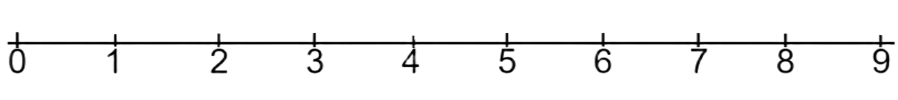
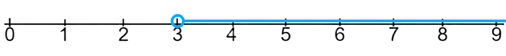
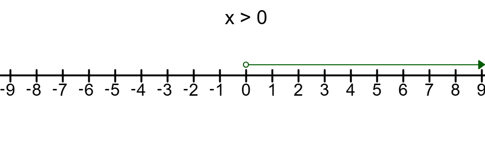
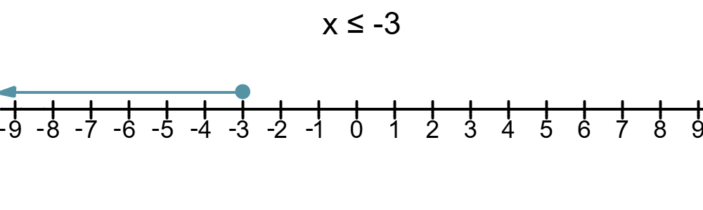
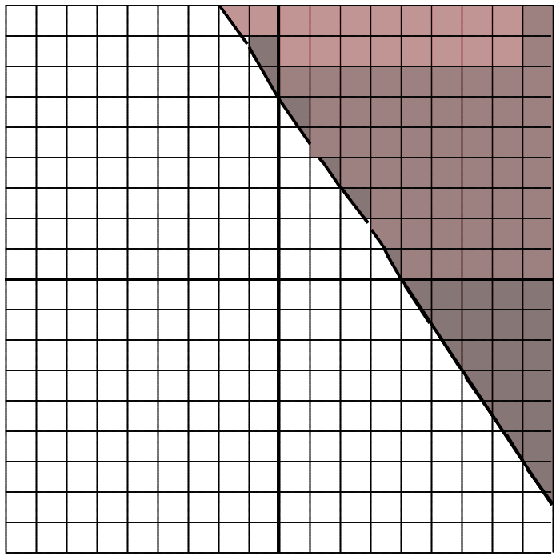

Inequalities are mathematical statements that include two values that are not equal and have a comparison sign in between them like these…
Inequalities often contain variables and can be similar to linear equations. And inequalities are usually shown on a number line...
An example of a inequality is this...
And this is a number line. Number lines are lines with numbers on the bottom to help picture numbers in between, greater or less than another number…

And for the example above, X is greater than three. The number line would look like this…

Notice that the circle on the start of the line is open (the inside of the circle isn’t filled in). This is important to tell if the comparison sign also has the equal to function or not.
The boundary value of an inequality represents the set of numbers that satify it. For example in...
In this inequality, "2", represents the boundary value as and any value greater than it including itself satifies the inequality.
Strict Inequalities are inequalities that are represented by a greater than ( > ) or less than ( < ) sign. The semantic form of strict inequalities is how, "a is strictly greater than b", or, "a > b". Strict inequalities don't allow equality between two or more numbers, so in, "a > b", a cannot equal b. On a number line, strict inequalities are shown with an open sign...

Strict inequalities don't include the boundary value so in the example above, 0 doesn't satify the inequality.
Non-Strict inequalities are inequalities that are represented by a greater than or equal to ( ≥ ) or less than or equal to ( ≤ ). the semantic form of non-strict inequalities is how, "a is greater than or equal to b", or "a ≥ b". Unlike strict inequalities, non-strict ones include the boundary value as a value that satifies it...

So in this inequality, the boundary value, -3 can satify the inequality.
Compound inequalities are inequalities that combine two or more non-strict or strict inequalities. An example of a compound inequality is...
In this inequality, any number that is greater than -2 but less than 6 satifies it.
Sometimes, compound inequalities contain OR statements...
In this inequality, any number that is less than or equal to -7 OR is greater than 3 satifies the compound inequality.
To graph in an inequality, you first turn the inequality into slope-intercept form if it isn't in that form already...
Now that the inequality is in slope-intercept form, we will graph it...
The dotted line just graphed is called the boundary line formed by the inequality, it divides the coordinate graph into two parts as one part contains all the solutions and the other contains none. Now looking at the inequality, it says that all y values that are greater than -3/2x + 6, and since that on the graph, the greater the y-value the higher the point is, we can consider all y-points above the dotted line are solutions.

You can also plot points to test if the boundary line considers it a solution or not...